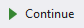
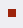

Programmeren Basis - Deel 10¶
1. Kleuren in de console aanpassen¶
Je kan in het console scherm verschillende voorgrond en achtergrond kleuren gebruiken.
Door aan de Console.BackgroundColor en Console.ForegroundColor properties een kleur toe te kennen pas je deze instelling aan.
Voorbeeld met console kleuren
Het achtergrond kleur wordt eerst op groen ingesteld, de voorgrond daarna op rood.
Console.WriteLine("Hier zijn nog geen kleuren aangepast.");
Console.BackgroundColor = ConsoleColor.Green;
Console.WriteLine("De achtergrond is nu ingesteld op GROEN!");
Console.ForegroundColor = ConsoleColor.Red;
Console.WriteLine("De kleur op de voorgrond is aangepast in ROOD.");
Console.ResetColor();
Console.WriteLine("Nu werden de kleuren hersteld.");
Het console scherm zou er zo kunnen uitzien…

Zoals je merkt kan je voor het herstellen van de oorspronkelijke kleuren kan je altijd gebruikmaken van Console.ResetColor().
De naam van de kleur laat je voorafgaan door ConsoleColor.
Een overzicht van de kleuren vind je hier…

2. Methods¶
2.1. Meermaals uitschrijven van dezelfde logica vermijden¶
Het valt soms voor dat een bepaald code fragment op verschillende plaatsen in je algoritme opduikt. Het meermaals uitschrijven van dezelfde logica is echter nooit een goed idee. Het maakt de code immers minder leesbaar en moeilijker te onderhouden.
Wens je aan dergelijke herhaalde logica iets aan te passen, dan moet dit op verschillende plaatsen gebeuren. Dit is niet alleen een vervelend werk, het is ook foutgevoelig. Daarom proberen we steeds DRY te werken (Don’t Repeat Yourself), en dus zo weinig mogelijk dezelfde code te gaan uitschrijven.
2.1.1. Aan de hand van iteratiestructuren¶
Aan de hand van iteratiestructuren hebben we reeds herhalingen van logica vermeden.
Indien een bepaald codefragment (bijvoorbeeld met instructies B, C en D) verschillende keren (na elkaar) wordt gebruikt, kan je aan de hand van do while, while, for of foreach statements dit meermaals uitschrijven vermijden…
| Zonder herhaling | Met herhaling |
|---|---|
 |
 |
2.1.2. Aan de hand van extra methods¶
Indien de herhalingen niet opeenvolgend zijn, is een oplossing met iteratiestructuren niet steeds meer voor handen. Wel kunnen we het meermaals uitschrijven van dezelfde code vermijden door dergelijke logica in een aparte method te gaan definiëren.
Opmerking: Wat is een method?
Een method wordt één keer gedefinieerd, en verzamelt instructies. Men spreekt ook wel over de method definitie.
De method kan meermaals worden aangeroepen (bij wijze van een method call). Dit telkens wanneer de logica die ze vervat moet worden uitgevoerd…
We splitsen code af in een aparte method omdat we deze op verschillende plaatsen willen gebruiken, en geen copy/paste willen doen. Copy/paste is altijd problematisch, als het stuk code ooit moet wijzigen, moeten we het op verschillende plaatsen aanpassen. Het terugvinden van die plaatsen waar code nogmaals is herschreven is trouwens niet eenvoudig.
Indien een bepaald code fragment (bijvoorbeeld met instructies I en J) op verschillende plaatsen wordt gebruikt, kan je aan deze verschuiven naar een ExtraMethod. Deze extra method kan vervolgens worden aangeroepen…
| Zonder extra method | Met extra method |
|---|---|
 |
 |
Het code fragment wordt niet meer meermaals uitgeschreven, enkel de aanroep naar de extra method wordt nog herhaald.
Indien een method wordt aangeroepen (met een zogenaamde method call) wordt de code van deze method uitgevoerd. Na afloop wordt teruggekeerd naar de plaats van aanroep, en wordt de code die volgt op de method call vervat.
Opmerking: Console applicaties starten bij deMainmethod.
Tot dus ver hebben we alles uitgeschreven aan de hand van één method. Meer specifiek de hoofdmethod, waar ons programma start.
Deze hoofdmethod krijgt altijd de naam
Main. Een console applicatie start steeds bij deze hoofdmethod.
2.2. Code structureren¶
Code afsplitsen in aparte methods heeft ook als voordeel dat we er zo een naam op kunnen plakken.
Door code weg te schuiven (naar de method definitie) en te vervangen door een eenvoudige method call, kunnen we ons beter concentreren op een bepaald abstractieniveau. We worden niet meer verstrooid door allerhande technische details.
Het maakt de code (waar we de methods aanroepen) eenvoudiger en leesbaarder.
Conversie voorbeeld - Alles samen
We wensen een eenvoudige console applicatie die ons de mogelijkheid laat inches naar centimeters, of het omgekeerde (centimeter naar inches) om te zetten.
Het programma moet een menu aanbieden met de voorziene opties…
Indien de gebruiker hier bijvoorbeeld voor 2 had gekozen, en op ENTER drukt, dient zij/hij vervolgens een om-te-zetten waarde in te voeren…
Om-te-zetten waarde?: 10
10 inch is 25,4 centimeter.
Druk op <Enter> om nog een afstand om te zetten...
Bij invoer van 10 toon het programma het omgezette resultaat, en biedt het de mogelijkheid overnieuw te beginnen.
Onderstaande code werd daarvoor in eerste instantie opgesteld…
Focus niet teveel op de details maar laat je alvast opvallen hoe:
-
Alles samen in één method is gepropt. De code voor het afprinten van een menu, een keuze laten invoeren, weergeven van een foutmelding over de invoer, omzetten van de ingevoerde waardes, …, staat allemaal samen.
-
Bepaalde code fragmenten worden zelfs meermaals uitgeschreven. Zo wordt een tweetal keer op bijna identieke wijze een foutmelding weergegeven.
static void Main() {
Console.ResetColor();
do {
string menuOptie;
bool fouteMenuKeuze;
do {
Console.Clear();
Console.WriteLine("Omzetting:");
Console.WriteLine("1) centimeter -> inch");
Console.WriteLine("2) inch -> centimeter");
Console.Write("Keuze (1/2)?: ");
menuOptie = Console.ReadLine().Trim();
fouteMenuKeuze = (menuOptie != "1") && (menuOptie != "2");
if (fouteMenuKeuze) {
Console.BackgroundColor = ConsoleColor.Yellow;
Console.ForegroundColor = ConsoleColor.Red;
Console.WriteLine("Gelieve een bestaande menu-optie uit te kiezen!");
Console.ResetColor();
Console.Write("Druk op <Enter> om opnieuw te proberen...");
Console.ReadLine();
}
} while (fouteMenuKeuze);
double getal;
bool fouteWaarde;
do {
Console.Clear();
Console.Write("Om-te-zetten waarde?: ");
fouteWaarde = !double.TryParse(Console.ReadLine(), out getal);
if (fouteWaarde) {
Console.BackgroundColor = ConsoleColor.Yellow;
Console.ForegroundColor = ConsoleColor.Red;
Console.WriteLine("Gelieve een getal in te voeren!");
Console.ResetColor();
Console.Write("Druk op <Enter> om opnieuw te proberen...");
Console.ReadLine();
}
} while (fouteWaarde);
if (menuOptie == "1") {
Console.WriteLine($"{getal} centimeter is {getal * 0.3937} inch.");
} else if (menuOptie == "2") {
Console.WriteLine($"{getal} inch is {getal * 2.54} centimeter.");
}
Console.Write("Druk op <Enter> om nog een afstand om te zetten...");
Console.ReadLine();
} while (true);
}
De code is weinig gestructureerd.
Het is niet eenvoudig overzicht te verwerven in het het verloop van het programma. En het is ook niet makkelijk meteen terug te vinden waar in de code je eventuele wijzigingen moet aanbrengen.
2.3. Method definitie¶
Meerdere methods kunnen in dezelfde klasse (bijvoorbeeld class Program) worden gedefinieerd. Klassen verzamelen de verschillende methods, bijvoorbeeld deze die tot een bepaald programma behoren.
De volgorde van deze methods in een klasse is vrij uit te kiezen. Maar het is een goed idee met de hoofdmethod te starten. Of op zijn minst de verschillende methods in een volgorde te plaatsen die overeenkomt met de volgorde waarin ze worden aangeroepen.
Hoe groter en complexer ons programma wordt, hoe vlugger je gaat focussen op het structureren van je code.
Conversie voorbeeld - Extra methods
In ons voorgaand voorbeeld zou je bijvoorbeeld de code die zorgt voor het afdrukken van het menu samen kunnen definiëren in een aparte method PrintMenu…
static void PrintMenu()
{
Console.Clear();
Console.WriteLine("Omzetting:");
Console.WriteLine("1) centimeter -> inch");
Console.WriteLine("2) inch -> centimeter");
Console.Write("Keuze (1/2)?: ");
}
Extra methods worden, net zoals onze Main method, gedefinieerd met de static void sleutelwoorden in de hoofding. De betekenis van deze sleutelwoorden wordt verderop besproken.
Op static void volgt de naam van de method. Na de naam volgen ronde haakjes (). Straks bespreken we hoe deze haakjes kunnen ingezet worden voor het doorgeven van informatie.
Tussen de accolades wordt de code geplaatst die moet worden uitgevoerd wanneer deze method wordt aangeroepen.
Opmerking: Namen van extra method
De naam omschrijft welke functionaliteit de method zal vervullen. Bijvoorbeeld PrintMenu, ToonFactuur, VerhoogSalaris, VerwijderWerknemer.
Typisch start de naam van een method met een werkwoord in gebiedende wijs. Vaak volgt op dit werkwoord een zelfstandig naamwoord die wat meer context geeft.
Denk ook aan voorgedefinieerde methods als
Write,WriteLine,ReadLineofResetColor.Het is mogelijk in dezelfde klasse (bijvoorbeeld
class Program) meerdere methods te definiëren met dezelfde naam. Zolang er een verschil is in de parameters (type, aantal of volgorde) wordt dit toegestaan. Het valt echter af te raden dit te doen, het brengt niets bij aan de uitdrukkingskracht van je code.
2.3.1. Waar moet ik extra methods plaatsen?¶
Voordien moest je de code van de oplossingen netjes tussen de accolades van de Main method plakken om een volledig en werkend programma te bekomen.
Vanaf hier gaan we met meerdere methods aan de slag. De extra methods mogen samen met de Main method in de class Program worden ondergebracht.
De code in je Visual Studio project zal er dus zo moeten uitzien :
using System;
namespace ConsoleApp1 {
class Program {
// Hier plaatsen we de Main method ...
static void Main() {
// ...
}
// Maar ook alle extra methods ...
static void PrintMenu() {
// ...
}
// ...
}
}
2.4. Method call¶
Daar waar nodig, kan je deze implementatie aanroepen aan de hand van een method call.
Om dat te doen, vermeld je eenvoudigweg de naam van de method die je wenst aan te roepen.
Conversie voorbeeld - Gebruik van de extra method
In onze do { … } while (fouteMenuKeuze); loop, waar we tot dus ver begonnen met de code die het menu ging afprinten, kunnen we deze code vervangen door een call naar onze PrintMenu method…
static void Main() {
Console.ResetColor();
do {
string menuOptie;
bool fouteMenuKeuze;
do {
PrintMenu(); // (1)
menuOptie = Console.ReadLine().Trim();
fouteMenuKeuze = (menuOptie != "1") && (menuOptie != "2");
if (fouteMenuKeuze) {
Console.BackgroundColor = ConsoleColor.Yellow;
Console.ForegroundColor = ConsoleColor.Red;
Console.WriteLine("Gelieve een bestaande menu-optie uit te kiezen!");
Console.ResetColor();
Console.Write("Druk op <Enter> om opnieuw te proberen...");
Console.ReadLine();
}
} while (fouteMenuKeuze);
...
} while (true);
}
- Hier wordt onze extra method
PrintMenuaangeroepen.
De Main method is compacter geworden, en is zo beter leesbaar. Meteen wordt bij het nalezen duidelijk dat de herhaling start met het afprinten van een menu. Je hoeft niet meer de technische details te doorlezen vooraleer je zoiets doorhebt.
Let erop dat PrintMenu in dezelfde klasse (class Program in dit geval) is gedefinieerd als de Main method. Voor alle duidelijkheid nog eens alle code van deze klasse samen…
class Program {
static void Main() {
Console.ResetColor();
do {
string menuOptie;
bool fouteMenuKeuze;
do {
PrintMenu();
menuOptie = Console.ReadLine().Trim();
fouteMenuKeuze = (menuOptie != "1") && (menuOptie != "2");
if (fouteMenuKeuze) {
Console.BackgroundColor = ConsoleColor.Yellow;
Console.ForegroundColor = ConsoleColor.Red;
Console.WriteLine("Gelieve een bestaande menu-optie uit te kiezen!");
Console.ResetColor();
Console.Write("Druk op <Enter> om opnieuw te proberen...");
Console.ReadLine();
}
} while (fouteMenuKeuze);
double getal;
bool fouteWaarde;
do {
Console.Clear();
Console.Write("Om-te-zetten waarde?: ");
fouteWaarde = !double.TryParse(Console.ReadLine(), out getal);
if (fouteWaarde) {
Console.BackgroundColor = ConsoleColor.Yellow;
Console.ForegroundColor = ConsoleColor.Red;
Console.WriteLine("Gelieve een getal in te voeren!");
Console.ResetColor();
Console.Write("Druk op <Enter> om opnieuw te proberen...");
Console.ReadLine();
}
} while (fouteWaarde);
if (menuOptie == "1") {
Console.WriteLine($"{getal} centimeter is {getal * 0.3937} inch.");
} else if (menuOptie == "2") {
Console.WriteLine($"{getal} inch is {getal * 2.54} centimeter.");
}
Console.Write("Druk op <Enter> om nog een afstand om te zetten...");
Console.ReadLine();
} while (true);
}
static void PrintMenu() {
Console.Clear();
Console.WriteLine("Omzetting:");
Console.WriteLine("1) centimeter -> inch");
Console.WriteLine("2) inch -> centimeter");
Console.Write("Keuze (1/2)?: ");
}
}
Straks komen we terug op dit voorbeeld, en maken we het aan de hand van nog een extra method, nog compacter en nog beter gestructureerd.
2.5. Opvolgen van methodactivatie¶
Programma’s worden opgebouwd door verschillende methods van elkaar gebruik te laten maken. Eén method roept een andere op, die op zijn beurt nog een andere gaat aanroepen. Eens de code in een aangeroepen method voltooid is, wordt teruggekeerd naar plaats van aanroep om daar weer verder te gaan.
Het helpt als lezer van de code goed te kunnen volgen hoe de activatie van één method naar een andere overgaat. Anders uitgedrukt, te kunnen volgen welke code op welk moment in uitvoering is.
Maar laten we het eerst nog eens zelf proberen het verloop van een programma, dat van meerdere methods gebruik maakt, op te volgen…
Voorbeeld van methods die andere methods aanroepen
Neem onderstaande code over…
1 : using System;
2 : namespace VoorbeeldApp {
3 : class Program {
4 : static void Main() { // (1)
5 : PrintMenu(); // (2)
6 : Console.WriteLine("..."); // (10)
7 : }
8 : static void PrintMenu() {
8 : PrintLijn(); // (3)
10 : PrintTitel(); // (5)
11 : Console.WriteLine("...keuzes..."); // (8)
12 : PrintLijn(); // (9)
13 : }
14 : static void PrintLijn() {
15 : string lijn = new string('-', 50); // (4)
16 : Console.WriteLine(lijn);
17 : }
18 : static void PrintTitel() {
19 : Console.WriteLine("Voorbeeld App"); // (6)
20 : PrintLijn(); // (7)
21 : }
22 : }
23 : }
…en probeer eens, nog vóór je onderstaand resultaat bekijkt, zelf te voorspellen welke uitvoer dit zal opleveren?
-
Uiteraard start het programma bij onze
Mainmethod. -
Meteen wordt het menu afgedrukt (via
PrintMenu). -
Hiervoor wordt eerst een lijn (via
PrintLijn) afgedrukt. -
Een lijn afdrukken komt in dit geval neer op het afdrukken van een tekst bestaande uit 50 koppeltekens. Eens deze code is voltooid, en de lijn dus werd afgedrukt, …
-
keert het programma terug naar plaats van aanroep (in
PrintMenu), en gaat het verder met het afdrukken van de titel (viaPrintTitel). -
De tekst Voorbeeld App wordt afgedrukt, en…
-
een nieuwe lijn wordt geprint (via een nieuwe call naar de
PrintLijnmethod). Eens deze titel is geprint, … -
keert het programma terug naar plaats van aanroep (in
PrintMenu), en worden de verschillende menu keuzes weergegeven. -
Daarna wordt overnieuw een lijn afgedrukt (via een nieuwe call naar de
PrintLijnmethod). Alle code vanPrintMenuis uitgevoerd, dus… -
keert het programma bijgevolg terug naar plaats van aanroep (in
Main), en drukt het programma om af te ronden nog drie puntjes af.
-------------------------------------------------- // (1) (2) (3) (4)
Voorbeeld App // (5) (6)
-------------------------------------------------- // (7)
...keuzes... // (8)
-------------------------------------------------- // (9)
... // (10)
Methods Main, PrintMenu en PrintTitel worden elk één keer uitgevoerd. De laatste twee hebben we in de code zelf aangeroepen. De hoofdmethod (Main) wordt automatisch aangeroepen bij het opstarten van een console applicatie.
Method PrintLijn wordt in totaal drie keer aanroepen (en uitgevoerd).
Er bestaan in ontwikkelomgevingen tools (in Visual Studio het Call Stack toolvenster) om het verloop van deze activaties te kunnen opvolgen. Deze helpen ons het overzicht te bewaren, of fouten op te sporen. Later hebben we het wel eens over dat Call Stack toolvenster.
2.6. Lokale variabelen¶
Elke method kan eigen lokale variabelen hebben. De scope van deze variabelen is beperkt tot deze method, of zelf tot het kleinst omvattende code block (de dichtst omsluitende accolades).
De scope van een variabele is het bereik in dewelke je van deze variabele gebruik kan maken.
Methods mogen dezelfde namen voor variabelen gebruiken, er is geen verwarring mogelijk.
Voorbeeld van Step Over en Out
Een variabele x in de Main method heeft niets te maken met een variabele x in MethodA…
static void Main() {
int x = 9;
Console.WriteLine($"De waarde van x in Main, voor oproep MethodA is {x}.");
MethodA();
Console.WriteLine($"De waarde van x in Main, na oproep MethodA is {x}.");
}
static void MethodA() {
int x = 20;
Console.WriteLine($"De waarde van x in MethodA is {x}.");
}
De uitvoer is…
De waarde van x in Main, voor oproep MethodA is 9.
De waarde van x in MethodA is 20.
De waarde van x in Main, na oproep MethodA is 9. // (1)
- De waarde van
xinMainblijft 9.
Methods kunnen niet aan elkaars lokale variabelen. Daarom noemen we ze ook lokaal.
2.7. Parameters¶
Bij het oproepen van een method kunnen we hem extra informatie meegeven. Informatie die door deze method kan worden ingezet om zijn taken te vervullen.
Dit doen we aan de hand van parameters (ook wel argumenten genoemd). De informatie wordt tussen haakjes gezet bij de method oproep.
-
Geeft "Hallo" mee aan de oproep van de
WriteLinemethod. -
Geeft de waarden 1 en 11 mee aan de oproep van de
Nextmethod.
De aangeroepen methods kunnen vervolgens aan de slag met de ontvangen informatie. De WriteLine method zal de ontvangen informatie afdrukken op het de console. De Next method zal een willekeurig getal tussen 1 en 11 opleveren.
In de definitie van de method geven we de parameters namen, en leggen hun type vast.
Voorbeeld van een method met een parameter
Wensen we van uit de Main method aan de BegroetGebruiker method een voornaam mee te geven, dan vermelden we die in de oproep tussen de ronde haakjes…
static void Main() {
Console.Write("Geef uw voornaam?: ");
string voornaam = Console.ReadLine();
BegroetGebruiker(voornaam); // (1)
//BegroetGebruiker(123); // (3)
//BegroetGebruiker(); // (4)
}
static void BegroetGebruiker(string gebruiker) { // (2)
Console.WriteLine($"Welkom {gebruiker}, u bent nu aangemeld!");
}
-
Bij het aanroepen van de
BegroetGebruikermethod moeten we eenstringmeegeven, in dit geval geven wevoornaammee. -
Om een
stringte kunnen ontvangen moet onze method werken met een parameter van dat type. -
Compilefout: er wordt een
stringverwacht, en geenint. -
Compilefout: er wordt één waarde verwacht, deze is hier niet aanwezig.
De parameter van BegroetGebruiker is gedeclareerd van het type string, hierdoor wordt de aanroepende logica verplicht in string vorm een waarde op te geven.
Indien de gebruiker Jan invoert, bekomen we…
Opmerking: Welke naam kies ik voor mijn parameters?
Merk op dat de naam van de parameter
gebruikervanBegroetGebruikerniet gekoppeld is aan de variabelevoornaamuit deMainmethod. De variabelen hoeven dus niet dezelfde naam te hebben, maar dit mag wel.Voor de
BegroetGebruikermethod is de rol van de ontvangen waarde de naam van de gebruiker die begroet moet worden. De parameternaamgebruikerlijkt bijgevolg geen slechte keuze. Voor de aanroepende logica kan deze naam van de gebruiker bijvoorbeeld eenvoornaamzijn, maar net zo goed komt de naam van de gebruiker uit een variabelegast,userofadmin.Het is met andere woorden niet zo dat omdat het in de context van de
Mainmethod gaat om eenvoornaam, datBegroetGebruikerdan ook maar een gelijknamige parameter moet krijgen.Baseer de namen van je parameters op de rol die de ontvangen waardes aannemen binnen de aangeroepen method.
Bij het aanroepen van een geparameteriseerde method (een method met parameters) hoef je ook niet persé met variabelen te werken om de parameterwaarde op te geven.
Voorbeeld van meegeven van verschillende parameterwaardes
Het kan ook aan de hand van expressies in andere vormen…
static void Main() {
// Aan de hand van een literal expressie...
BegroetGebruiker("administrator"); // (1)
// Aan de hand van een samengestelde expressie...
int gastNummer = 123;
BegroetGebruiker("gast" + gastNummer); // (2)
// Aan de hand van een call naar een andere method (die een waarde oplevert)...
BegroetGebruiker(Console.ReadLine()); // (3)
}
static void BegroetGebruiker(string gebruiker) {
Console.WriteLine($"Welkom {gebruiker}, u bent nu aangemeld!");
}
-
De tekst "administrator" wordt meegegeven.
-
De tekst "gast123" wordt meegegeven.
-
De ingevoerde tekst wordt meegegeven.
Bij elke call naar BegroetGebruiker wordt hier één string meegegeven, dat is wat technisch gezien ook wordt verwacht.
Indien de gebruiker nu Jan invoert, bekomen we…
Welkom administrator, u bent nu aangemeld!
Welkom gast123, u bent nu aangemeld!
Jan
Welkom Jan, u bent nu aangemeld!
Zolang het datatype van de gebruikte expressie maar overkomt met deze van de gedeclareerde parametervariabele.
Dat was niet anders dan bij het gebruik van voorgedefinieerde methods. Denk bijvoorbeeld aan iets als int.Parse(Console.ReadLine()).
Meerdere parameters¶
Tot nu toe hadden we in onze eigen methods één parameter, maar dit kunnen er uiteraard meerdere zijn.
Plaats komma’s tussen de verschillend declaraties van parameters (in de definitie) of parameterwaardes (in de call).
Voorbeeld van meerdere parameters
Indien we af en toe van verschillende trekkingen de lotto cijfers willen afdrukken, telkens ook voorafgegaan door een eigen omschrijving, kan een method als PrintLottoCijfers met een tweetal parameters van pas komen.
De eerste parameter is de reeks van lotto cijfers die je wenst af te drukken. De tweede parameter is de omschrijving (of het label) dat bij het afdrukken vermeld wordt voor de cijfers…
static void Main() {
int[] trekking1 = { 32, 10, 27, 21, 2, 13 };
int[] trekking2 = { 10, 24, 34, 8, 19, 25 };
PrintLottoCijfers(trekking1, "Trekking van gisteren");
PrintLottoCijfers(trekking2, "Trekking van vandaag");
}
static void PrintLottoCijfers(int[] lottoCijfers, string label) {
string cijfersInEénTekst = string.Join("|", lottoCijfers);
Console.WriteLine($"{label}: {cijfersInEénTekst}");
}
Indien we het voorbeeld uitvoeren dan krijgen we volgende output…
We worden verplicht twee argumentwaardes door te geven. Een eerste van type int[] (int array), een tweede van type string.
Waarom parameteriseren¶
Niet altijd moet een method bij elke uitvoering exact hetzelfde doen. Soms merk je dat code min of meer op dezelfde wijze meermaals is uitgeschreven.
Indien het verschil hem zit in de waardes waarmee gewerkt wordt, liggen methods met parameters voorhanden.
Conversie voorbeeld - Extra method met parameters
Het is je misschien opgevallen in ons conversie voorbeeld (centimeter naar inches en omgekeerd) de instructies die de foutmeldingen tonen ook meermaals hadden uitgeschreven.
Regels 11 tot en met 16 en regels 28 tot en met 33 zijn zo goed als identiek.
Enkel de tekst die wordt afgedrukt is verschillend.
1 : ...
2 :
3 : string menuOptie;
4 : bool fouteMenuKeuze;
5 : do {
6 : PrintMenu();
7 : menuOptie = Console.ReadLine().Trim();
8 : fouteMenuKeuze = (menuOptie != "1") && (menuOptie != "2");
9 :
10 : if (fouteMenuKeuze) {
11 : Console.BackgroundColor = ConsoleColor.Yellow;
12 : Console.ForegroundColor = ConsoleColor.Red;
13 : Console.WriteLine("Gelieve een bestaande menu-optie uit te kiezen!");
14 : Console.ResetColor();
15 : Console.Write("Druk op <Enter> om opnieuw te proberen...");
16 : Console.ReadLine();
17 : }
18 : } while (fouteMenuKeuze);
19 :
20 : double getal;
21 : bool fouteWaarde;
22 : do {
23 : Console.Clear();
24 : Console.Write("Om-te-zetten waarde?: ");
25 : fouteWaarde = !double.TryParse(Console.ReadLine(), out getal);
26 :
27 : if (fouteWaarde) {
28 : Console.BackgroundColor = ConsoleColor.Yellow;
29 : Console.ForegroundColor = ConsoleColor.Red;
30 : Console.WriteLine("Gelieve een getal in te voeren!");
31 : Console.ResetColor();
32 : Console.Write("Druk op <Enter> om opnieuw te proberen...");
33 : Console.ReadLine();
34 : }
35 : } while (fouteWaarde);
36 :
37 : ...
Bijvoorbeeld het instellen van de foutmeldings-kleuren, het brengen van de foutmelding, en het resetten van de kleuren, werd twee keer uitgeschreven.
Weliswaar één keer voor de melding "Gelieve een bestaande menu-optie uit te kiezen!", en een andere keer met melding "Gelieve een getal in te voeren!".
Een extra method als PrintFoutmelding met een parameter als melding kan hier helpen…
static void PrintFoutmelding(string melding)
{
Console.BackgroundColor = ConsoleColor.Yellow;
Console.ForegroundColor = ConsoleColor.Red;
Console.WriteLine(melding); // (1)
Console.ResetColor();
Console.Write("Druk op <Enter> om opnieuw te proberen...");
Console.ReadLine();
}
- Deze keer wordt de inhoud van de parametervariabele afgedrukt. Het zal de aanroepende logica zijn die bepaald om welke
meldinghet juist gaat.
De ene keer kan PrintFoutmelding worden aangeroepen indien een foutieve menu-keuze is gemaakt…
De andere keer indien er geen getal werd ingevoerd…
Of nog eens alle code van class Program samen…
class Program {
static void Main() {
Console.ResetColor();
do {
string menuOptie;
bool fouteMenuKeuze;
do {
PrintMenu();
menuOptie = Console.ReadLine().Trim();
fouteMenuKeuze = (menuOptie != "1") && (menuOptie != "2");
if (fouteMenuKeuze) {
PrintFoutmelding("Gelieve een bestaande menu-optie uit te kiezen!"); // (1)
}
} while (fouteMenuKeuze);
double getal;
bool fouteWaarde;
do {
Console.Clear();
Console.Write("Om-te-zetten waarde?: ");
fouteWaarde = !double.TryParse(Console.ReadLine(), out getal);
if (fouteWaarde) {
PrintFoutmelding("Gelieve een getal in te voeren!"); // (2)
}
} while (fouteWaarde);
if (menuOptie == "1") {
Console.WriteLine($"{getal} centimeter is {getal * 0.3937} inch.");
} else if (menuOptie == "2") {
Console.WriteLine($"{getal} inch is {getal * 2.54} centimeter.");
}
Console.Write("Druk op <Enter> om nog een afstand om te zetten...");
Console.ReadLine();
} while (true);
}
static void PrintMenu() {
Console.Clear();
Console.WriteLine("Omzetting:");
Console.WriteLine("1) centimeter -> inch");
Console.WriteLine("2) inch -> centimeter");
Console.Write("Keuze (1/2)?: ");
}
static void PrintFoutmelding(string melding) {
Console.BackgroundColor = ConsoleColor.Yellow;
Console.ForegroundColor = ConsoleColor.Red;
Console.WriteLine(melding);
Console.ResetColor();
Console.Write("Druk op <Enter> om opnieuw te proberen...");
Console.ReadLine();
}
}
-
PrintFoutmeldingwordt aangeroepen voormelding"Gelieve een bestaande menu-optie uit te kiezen!". -
PrintFoutmeldingwordt aangeroepen voormelding"Gelieve een getal in te voeren!".
Merk op dat onze Main method alvast een stukje eenvoudiger is geworden.
Bij het bekijken van de code krijg je vrij vlug een beeld hoe het programma zal verlopen. Je wordt niet meer verstrooid door de technische details van het printen van de menu of het printen van één of ander foutmelding.
Wil je dan toch in die technische details duiken, dan kan dat uiteraard door naar de code te gaan kijken van de desbetreffende extra methods.
2.8. Return values¶
Een method kan een waarde produceren, of anders uitgedrukt: hij kan een waarde opleveren.
Bijvoorbeeld…
string input = Console.ReadLine(); // (1)
Random rnd = new Random();
int getal = rnd.Next(1, 11); // (2)
Console.WriteLine(getal); // (3)
-
Method
ReadLineproduceert eenstringwaarde. -
Method
Nextproduceert eenintwaarde. -
Andere methods, zoals
WriteLineleveren geen waarde op.
Het type van de waarde die geproduceerd wordt, wordt opgegeven in de method definitie. Men noemt dit het return type van de method.
Methods die geen waarde produceren, gebruiken void (Nederlands: leegte) in plaats van een return type om dat te signaleren.
In de method zelf kun je aangeven wat de geproduceerde waarde is met een return statement.
De uitvoering van een method stopt meteen na deze return opdracht. Waarna de uitvoering uiteraard, net als bij void methods, verder gaat net na de method oproep.
Voorbeeld van een method die een waarde oplevert
In dit voorbeeld zal de BodyMassIndex method een double waarde opleveren.
static void Main() // (4)
{
int kg = 47;
int cm = 158;
double bmi = BodyMassIndex(kg, cm); // (3)
Console.WriteLine(bmi);
//Of meteen:
Console.WriteLine(BodyMassIndex(47, 158)); // (3)
}
static double BodyMassIndex(int gewichtInKg, int lengteInCentimeter) // (2)
{
double lengteInMeter = lengteInCentimeter / 100.0;
double bmi = gewichtInKg / Math.Pow(lengteInMeter, 2);
return bmi; // (1)
}
-
In de implemenatie van deze method wensen we graag een bmi waarde (
double) op te leveren. -
Om een
doublete kunnen opleveren (returnen) moeten we op de hoofding voor de methodnaam dat return type vermelden. Op basis van die informatie weet de compiler hoe men deze method kan inzetten (oproepen). -
Gezien de
BodyMassIndexmethod eendoublewaarde oplevert, kan de call naar deze method alsdoubleexpressie worden gebruikt. -
De
Mainmethod wil niets returnen, en wordt bijgevolg gemarkeerd alsvoidmethod.
Indien we het voorbeeld uitvoeren dan krijgen we volgende output…
We gebruiken een return statement voor het opgeven van de op-te-leveren waarde.
Het sleutelwoord return moet uiteraard gevolgd worden door een expressie van hetzelfde datatype als het return type dat in de hoofding is vermeld. In een double method moeten we bijvoorbeeld een double waarde opleveren.
Opmerking
Zelfs in een
voidmethod kan je eenreturnopdrachten opnemen. Op het sleutelwoordreturnvolgt dan geen waarde, dus bijvoorbeeld gewoonreturn;.Dit beëindigt de method meteen en de uitvoering keert terug naar de plaats van oproep. Je zou het kunnen vergelijken met wat een
breakdoet voor een loop.
Return type van voorgedefinieerde methods¶
Indien je in de code editor van Visual Studio met je muisaanwijzer hovert boven de naam van de method dan krijg je zijn hoofding (ook wel signatuur genoemd) te zien.
In die hoofding zie je voor de methodnaam staan wat het return type is van deze method.
In het geval van de Console.ReadLine method is dit inderdaad string…

Bij de Random.Next method is dat int…

Console.WriteLine produceert geen waarde, wat we inderdaad opmerken aan de hand van het void sleutelwoord…

Je merkt hoe zo’n tooltips nuttige informatie kunnen opleveren.
2.9. Command versus Query¶
Er zijn dus twee soorten methods…
Methods die een resultaat produceren
Dergelijke method wordt ook wel een query (Nederlands: vraag) genoemd. De benaming query is niet vreemd, je verwacht immers dat op een vraag een antwoord word geproduceerd. Het antwoord is dan de opgeleverde waarde.
-
Deze methods leveren in hun implementatie een waarde op bij wijze van een
returnstatement. Ze hebben dus een echt return type (dus geenvoid), die op hoofding voor de methodnaam wordt vermeld. -
Omdat deze methods een waarde opleveren, ga je ze typisch als expressie aanroepen, bijvoorbeeld in de veronderstelling dat
Aeenintproducerende method is, en methodBeenstringreturn type kent: kanAenBoveral gebruikt worden waar grammaticaal gezien respectievelijk eenintofstringexpressie wordt verwacht… -
Queries krijgen vaak een naam die bestaat uit een zelfstandig naamwoord, of op zijn minst een naam die omschrijft wat voor soort waarde wordt opgeleverd. Bijvoorbeeld: BodyMassIndex. Soms word een prefix "Get" gebruikt (bijvoorbeeld GetBodyMassIndex). Anderzijds zie je bij
boolopleverende methods wel een de prefix "Is". Conversie queries (om waardes om te zetten) krijgen dan typisch een "To" prefix (bijvoorbeeld ToLower).
Method die geen resultaten produceren
Dergelijke method wordt ook wel een command (Nederlands: opdracht) genoemd. De call naar zo’n method grijpt immers plaats als het geven van een opdracht.
-
Leveren niets op, we gebruiken om dat te signaleren in de hoofding het
voidsleutelwoord in plaats van een return type. -
Omdat ze niets opleveren, worden ze niet als expressie aangeroepen. De call alleen vormt het statement, bijvoorbeeld…
-
Commands krijgen vaak een naam die bestaat uit een werkwoord (in gebiedende wijs), soms gevolgd door een zelfstandig naamwoord. Het werkwoord geeft aan wat voor soort actie plaatsvindt (bijvoorbeeld Write, Read of Print). Het zelfstandig naamwoord verschaft wat meer context (bijvoorbeeld WriteLine of PrintQuotient).
Kies ik voor een command of voor een query?
De keuze voor één van de twee, command of query is niet moeilijk. Denk steeds vanuit het perspectief van de client code (de aanroepende logica). Hoe wil die gebruik gaan maken van je method:
-
Wenst hij de method gewoon aan te roepen, bij wijze van opdracht om een stuk code op te starten? Kies dan voor een command.
-
Wenst hij eerder een vraag te stellen waar hij een antwoord op wil, of zal hij met andere woorden de method aanroepen als expressie? Dan heb je duidelijk een query nodig.
Voorbeeld van keuze voor command vs query
In volgend stukje code schrijven we meermaals dezelfde voorwaarde uit. Een voorwaarde meer specifiek die nagaat of een bepaald jaartal (jaar of volgendJaar) een schrikkeljaar is.
Het meermaals uitschrijven van dezelfde logica willen we vermijden. Het maakt onze code, op zijn minst gezegd, moeilijker leesbaar.
static void Main()
{
Console.Write("Jaar?: ");
int jaar = int.Parse(Console.ReadLine());
if (jaar % 400 == 0 || jaar % 4 == 0 && jaar % 100 != 0) {
Console.WriteLine($"{jaar} is een schrikkeljaar.");
} else {
Console.WriteLine($"{jaar} is geen schrikkeljaar.");
int volgendJaar = jaar + 1;
if (volgendJaar % 400 == 0 || volgendJaar % 4 == 0 && volgendJaar % 100 != 0) {
Console.WriteLine("Het jaar daarop is wel een schrikkeljaar.");
}
}
}
Voorwaarde…
jaar % 400 == 0 || jaar % 4 == 0 && jaar % 100 != 0
…is zo goed als identiek aan…
volgendJaar % 400 == 0 || volgendJaar % 4 == 0 && volgendJaar % 100 != 0
Het enigste onderscheid zit hem in de waarde waarmee gewerkt wordt. Dit maakt dat we dit meermaals uitschrijven kunnen vermijden door toevoeging van een extra method. Dat telkens met een andere waarde wordt gewerkt, jaar of volgendJaar, is niet erg, we weten immers hoe we methods kunnen parametriseren.
In beide if statements zouden we dus graag eerder een call gebruiken naar een method die duidelijk maakt of jaar of volgendJaar al dan niet een schrikkeljaar is. Iets als…
static void Main()
{
Console.Write("Jaar?: ");
int jaar = int.Parse(Console.ReadLine());
if (IsSchrikkeljaar(jaar)) { // (1)
Console.WriteLine($"{jaar} is een schrikkeljaar.");
} else {
Console.WriteLine($"{jaar} is geen schrikkeljaar.");
int volgendJaar = jaar + 1;
if (IsSchrikkeljaar(volgendJaar)) { // (1)
Console.WriteLine("Het jaar daarop is wel een schrikkeljaar.");
}
}
}
- De uitgeschreven voorwaarde is vervangen door een method call.
Aan de manier waarop deze method is aangeroepen (zijn grammaticale context) kan je afleiden dat het hier om een query moet gaan. Tussen de ronde haakjes na het if sleutelwoord wordt immers een expressie verwacht. Meer specifiek een bool expressie…
static bool IsSchrikkeljaar(int jaartal)
{
return (jaartal % 400 == 0 || jaartal % 4 == 0 && jaartal % 100 != 0);
}
Dat het om query gaat zal je allicht niet verwonderen. De method zou een antwoord moeten geven (bevestigend of ontkrachtend ⇒ bool als return type) op de vraag of een bepaald jaartal (de parameter) al dan niet een schrikkeljaar betreft.
3. Geavanceerd gebruik van de debugger¶
3.1. Opvolgen van methodactivatie¶
3.1.1. Call Stack toolvenster¶
Om op te volgen hoe de activatie van één method naar een andere overgaat, welke method welke andere method aanroept, kan je gebruik maken van het Call Stack toolvenster.
Het Call Stack toolvenster toont ons in stack (Nederlands: stapel) vorm welke methods actief (in uitvoering) zijn.
We illustreren de werking aan de hand van hetzelfde voorbeeld als in de sectie Opvolgen van methodactivatie van voorgaand deel uit het cursusmateriaal.
Voorbeeld van gebruik van het Call Stack toolvenster
Neem opnieuw onderstaande code over…
using System;
namespace VoorbeeldApp {
class Program {
static void Main() { // (1)
PrintMenu(); // (2)
Console.WriteLine("..."); // (10)
}
static void PrintMenu() {
PrintLijn(); // (3)
PrintTitel(); // (5)
Console.WriteLine("...keuzes..."); // (8)
PrintLijn(); // (9)
}
static void PrintLijn() {
string lijn = new string('-', 50); // (4)
Console.WriteLine(lijn);
}
static void PrintTitel() {
Console.WriteLine("Voorbeeld App"); // (6)
PrintLijn(); // (7)
}
}
}
Plaats in de code van vorig voorbeeld een breakpoint op regel 20, en voor de code tot daar uit.
Opmerking: Hoe plaats ik weer een breakpoint?
Indien je het ondertussen vergeten zou zijn; een breakpoint kan je bijvoorbeeld plaatsen door te rechterklikken op een regel en te kiezen voor Breakpoint › Insert Breakpoint, of door op de grijze zone te klikken helemaal links in de code editor.
De uitvoer werd onderbroken nog voor regel 20 wordt uitgevoerd…

Het Call Stack toolvenster werd in Visual Studio naar voor gebracht.
Opmerking: Hoe bekom ik het Call Stack toolvenster?
Wanneer de uitvoer is onderbroken kies je in Visual Studio voor Debug › Windows › Call Stack.
Helemaal vanboven op de stapel ligt een activatie van PrintTitel. We breken de uitvoer (met ons breakpoint) op regel 20. Ook dat wordt weergegeven in het toolvenster.
Onder de activatie voor PrintTitel vinden we een activatie van PrintMenu. Het is inderdaad zo dat we via PrintMenu in PrintTitel zijn terechtgekomen. Meer specifiek de call in onze code op line 10 zorgt voor een uitvoeringsinstantie van PrintTitel.
PrintMenu zelf, werd aangeroepen in de Main method (op regel 5), ook dat valt uit deze call stack af te leiden.
Uiteraard is onze uitvoer nog maar gedeeltelijk opgebouwd. Kijk je in het console scherm dan vind je enkel nog maar…
Merk ook op hoe in de code editor zelf de PrintMenu() en PrintTitel() calls waarvan sprake gemarkeerd werden (op regels 5 en 10).
3.1.2. Stappen door de code, en evolutie van de call stack¶
3.1.2.1. Step Into¶
Om aan de hand van de debugger stap voor stap door onze code te gaan hebben we reeds met een Step Into optie gewerkt.
Zonder het gebruik van extra methods werkte het adjectief "Into" van "Step Into" enkel verwarrend. Er waren immers nog geen andere methods om "in" te stappen. Ondertussen is dat wel het geval.
Voorbeeld van gebruik van Step Into
Vertrekkende van ons voorgaande breakpoint (op regel 20) van onze voorgaand codevoorbeeld, zouden we een stap verder kunnen gaan in de uitvoering, om het verloop van de uitvoer van PrintLijn op te volgen.
Kies je in Visual Studio voor Debug › Step Into of klik je op de Debug werkbalk op de  knop dan bekomen we volgende call stack…
knop dan bekomen we volgende call stack…

Er is halt gehouden op regel 14 in een nieuwe activatie van PrintLijn. De call naar PrintLijn, of een uitvoeringsinstantie voor deze method, is bovenop de stack (stapel) te komen liggen.
Op het console scherm is onder de titel nog steeds geen lijn te zien…
Klikken we nog twee keer op de Step Into knop () dan wordt halt gehouden op het eind (bij de afsluitende accolade) van de PrintLijn method…

Aan de call stack zelf is nog niets gewijzigd, maar uitvoer op het console scherm werd wel aangevuld met een lijn…
--------------------------------------------------
Voorbeeld App
--------------------------------------------------
Kiezen we nog één keer voor Step Into knop () dan is onze uitvoering van PrintLijn beïndigd…

De activatie van PrintLijn is voltooid, deze is bovenaan de call stack verwijderd.
De uitvoering van PrintTitel is opnieuw actief. De call stack werd afgedaald om terug te keren naar plaats van aanroep.
3.1.2.2. Evolutie van de call stack¶
De call stack (of stapel) gedraagd zich volgens het LIFO principe (Last In, First Out)…
-
De call stack krimpt indien de uitvoer van een method voltooid is. De laatst toegevoegde activatie (bovenaan de stapel) zal als eerste van de call stack worden verwijderd.
-
De call stack groeit wanneer tijdens uitvoer één method een andere gaat aanroepen. Er komt een nieuwe activatie bovenaan de stapel te liggen. De uitvoer van deze laatste zal moeten beëindigen, nog vóór de onderliggende activaties kunnen worden afgesloten.
3.1.2.3. Step Over en Out¶
Naast Step Into is ook sprake van Step Over en Step Out opties.
Op basis van wat (of welke uitvoer) je wenst op te volgen, zal je een keuze maken voor één van deze opties.
| Knop | Optie | Met herhaling |
|---|---|---|
|
Step Into | Stapt in een aangeroepen method. Je kan vervolgens de aangeroepen method gaan opvolgen. (De call stack groeit hier steeds met één activatie.) |
 |
Step Over | Stapt over een aangeroepen method. Je bent niet geïnteresseerd en wens de uitvoer van deze method niet op te volgen. (Je blijft hierbij hangen in dezelfde activatie in de call stack.) |
 |
Step Out | Je hebt genoeg gezien, en stap uit de huidige activatie, om terug te keren naar plaats van aanroep. (De call stack krimpt.) |
Voorbeeld van Step Over en Out
Opnieuw vertrekkende van ons voorgaande breakpoint (op regel 20) van onze voorgaand codevoorbeeld, zouden we meteen het resultaat van PrintLijn kunnen bekomen door over de call naar deze method te stappen.
Kies meteen voor Step Over ()…

En merk op dat de volledige titel is afgeprint, inclusief de afsluitende lijn…
--------------------------------------------------
Voorbeeld App
--------------------------------------------------
In de veronderstelling dat we geen interesse hadden de code van PrintLijn in detail te gaan opvolgen was Step Over de ideale keuze.
Klikken we nu twee keer op de Step Out knop (), dan bemerk je hoe we meteen twee trappen lager zijn terechtgekomen in onze call stack…

Zowel de uitvoer van PrintTitel, als deze van PrintMenu werd beëindigd. We bevinden ons terug in de activatie van de Main method.
De menu is volledig geprint, de afsluitende drie punten nog niet…
--------------------------------------------------
Voorbeeld App
--------------------------------------------------
...keuzes...
--------------------------------------------------
Opmerking: Programma verder laten uitvoeren
Ten allen tijd kan je natuurlijk het volledig programma laten verder lopen door op de

knop te klikken. Je vindt deze knop op de Debug werkbalk.
3.2. Uitvoer van code pauzeren¶
Visual Studio kan zich in een aantal verschillende modi bevinden, een overzicht…
| Modus | Omschrijving |
|---|---|
| designmodus | De fase waarin Visual Studio ons toestaat code te editeren. Ook wel eens editmodus genoemd. |
| runmodus | De fase waarin Visual Studio een applicatie in uitvoering brengt. |
| breakmodus | De fase waarin Visual Studio een applicatie heeft gepauzeerd. Ook wel debugmodus genoemd. |
In elke modi is het zo dat de ontwikkelomgeving wordt geoptimaliseerd voor het verrichten van activiteiten die typisch zijn voor deze fase. Tijdens debugmodus bijvoorbeeld krijgen we tools voorgeschoteld voor het debuggen van onze applicatie. Denk aan de Call Stack of het Locals toolvenster die we kunnen gebruiken om het verloop van de uitvoer van onze code op te volgen.
Opmerking: Stop de uitvoer (volledig) voor je code gaat aanpassen.
Technisch zijn er beperkte mogelijkheden ook tijdens breakmodus code aan te passen. Dit valt echter af te raden, want kan erg verwarrend werken. Het is moeilijk om bij te houden wat het effect is van de oorspronkelijk code versus de gewijzigde code.
Stop daarom altijd eerst de uitvoer volledig (ook al is de uitvoer gepauzeerd), vooraleer je code gaat aanpassen.
Het volledig stoppen (en dus niet louter pauzeren) kan bijvoorbeeld aan de hand van de Stop

knop. Je kan ook de stoppen door in de menu te kiezen voor Debug › Stop Debugging.
3.2.1. Breakpoints en Run execution to here¶
Soms heeft het weinig nut, bij het opvolgen van uitvoering van code, stap voor stap te gaan. Vaak is het zo dat je slechts geïnteresseerd bent in de toestand van het programma op heel specifieke plaatsen in je code.
Misschien wil je wel op punt X en punt Y de call stack inspecteren, of de inhouden van variabelen nagaan. Indien punt X en punt Y ver uitéén liggen, is het vervelend stap voor stap (bijvoorbeeld met Step Into of Step Over) van het ene naar het ander punt te stappen.
Een aantal oplossingen zijn hiervoor te bedenken:
Met breakpoints
1. Neem op punt X een breakpoint op.
-
Start de code . Visual Studio schakelt hierbij van design- naar runmodus, en voer de code uit.
-
Bij het eerste breakpoint (punt X) wordt de uitvoer gepauzeerd, en zal Visual Studio schakelen naar breakmodus. In deze modus worden verschillende tools ter beschikking gesteld om het verloop van je applicatie tot op dit punt op te volgen. Bijvoorbeeld de Call Stack of het Locals toolvensters.
-
Neem op punt Y een breakpoint op. (Al had je ze meteen ook samen met het breakpoint op punt X kunnen opnemen.)
-
Kies voor om het programma te laten doorlopen tot aan het tweede breakpoint (punt Y). Daar schakelt Visual Studio terug over op breakmodus. Opnieuw kan je de toestand van je programma op dit punt (punt Y) verifiëren.
In het geval dat je later misschien nogmaals de uitvoer wil pauzeren op deze specifieke plaats in de code (bijvoorbeeld op punten X en Y), is het werken met breakpoints aangewezen. Je breakpoints fungeren dan als een soort van bookmarks.
Breakpoints kan je opnemen zowel in design-, run-, als breakmodus.
Opmerking: Breakpoints tijdelijk uitschakelen.
Breakpoint kan je enable’n en disable’n.
Indien je een vermoeden hebt later nog van een bepaald breakpoint gebruik te willen maken, maar deze toch voorlopig wenst uit te schakkelen, kan je ze disable’n. Rechterklik op de instructie met het breakpoint en kies voor Breakpoint › Disable Breakpoint.
Ze terug enable’n kan met Breakpoint › Enable Breakpoint. Zo wordt ze weer actief.
Run execution to here
Het is ook mogelijk met de Run execution to here optie te werken. Eens de debugger actief is, kan je het programma meteen tot op een zelf gekozen plaats (here) code uitvoeren.
-
Start je programma op met aan de hand van Step Into
. Dit activeert de debugger, en geeft ons de mogelijkheid van de Run execution to here optie gebruik te maken. (Misschien kan je deze stap overslaan indien de uitvoer reeds gepauzeerd is en Visual Studio zich dus reeds in breakmodus bevindt.) -
Hover met je muisaanwijzer boven de code van punt X, een
 'Run execution to here' knop verschijnt. Klik op deze knop om het programma tot daar te laten uitvoeren.
'Run execution to here' knop verschijnt. Klik op deze knop om het programma tot daar te laten uitvoeren. -
Het programma wordt verder uitgevoerd tot aan voorvermeld punt (punt X). Op deze plaats wordt de uitvoer gepauzeerd en schakelt Visual Studio naar breakmodus. Maak gebruik van de toolvensters Call Stack of Locals om de toestand van je programma op dit punt (punt X) verifiëren.
-
Herhaal stappen 2 en 3 voor punt Y.
Indien je vermoed dat je op een plaats in de code éénmalig wil gaan pauzeren, is de Run execution to here optie best handig. Je hoeft zo geen breakpoints op te nemen, die naderhand toch weer moeten worden verwijderd.
Opgelet: de Run execution to here optie is niet ter beschikking in designmodus. De debugger moet reeds actief zijn, of je moet met andere woorden al de uitvoer van je programma gepauzeerd hebben, vooraleer je van deze optie gebruik kan gaan maken.
Voorbeeld verder verloop sturen met 'Run execution to here'
In volgende code zit een (logische) fout. Het programma doet niet correct wat zou moeten gebeuren.
Op basis van een ingevoerde lengte en breedte moet het aantal hectare worden berekend. Voert de gebruiker echter 100 als lengte, en 100 als breedte in, dan bekomen we 10 hectare…
Dit is niet correct, 100 op 100 meter is 1 hectare.
De code is…
1 : static void Main() {
2 : Console.Write("Lengte in meter?: ");
3 : double lengte = double.Parse(Console.ReadLine());
4 :
5 : Console.Write("Breedte in meter?: ");
6 : double breedte = double.Parse(Console.ReadLine());
7 :
8 : double hectare = GetHectare(lengte, breedte);
9 : Console.WriteLine("Aantal hectare: " + hectare);
10 : }
11 :
12 : static double GetHectare(double lengteInMeter, double breedteInMeter) {
13 : double vierkanteMeter = lengteInMeter * breedteInMeter;
14 : double are = vierkanteMeter / 10;
15 : double hectare = are / 100;
16 : return hectare;
17 : }
Ergens loopt het dus fout, we moeten opzoek naar de bug. Stap voor stap (bijvoorbeeld met Step Into of Step Over) door de code gaan kan, maar is tijdrovend. We kunnen misschien beter een aantal points of interest bepalen bij het debuggen. Anders uitgedrukt: plaatsen in ons code waarop we ons kunnen inbeelden dat iets fout loopt.
In grote lijnen vertolkt ons programma twee handelingen. Het opvangen van de invoer, en het berekenen van het aantal hectare. Misschien moeten we van elke van deze handelingen nagaan of ze goed functioneren.
Je zou hiervoor breakpoints kunnen opnemen, bijvoorbeeld op regels 8 en 16, maar laten we het deze keer met de 'Run execution to here' optie proberen.
Kies voor Step Into om het programma op te starten, en tevens de debugger te activeren.
Klik vervolgens op de Run execution to here knop op de instructieregel double hectare = GetHectare(lengte, breedte);…

In het console scherm voer je vervolgens waardes 100 en 100 in als lengte en breedte in meter…
Visual Studio schakelt naar breakmodus.
Haal het Call Stack en Locals toolvenster boven en inspecteer de huidige toestand.

In de Call Stack zien we hoe de Main method actief is. GetHectare werd nog niet aangeroepen, nog voor de oproep van deze method is door de debugger halt gehouden.
Het Locals toolvenster toont ons hoe de lengte en breedte variabelen correct zijn opgevuld.
Aan het opvangen van de invoer is bijvolg niets fout.
We laten het programma verder lopen tot alle waardes (vierkanteMeter, are en hectare) berekend zijn.
Doe dit door op de Run execution to here knop te klikken voor de instructieregel return hectare. Zo gaan we de uitvoer laten stoppen nog voor de aangeroepen method GetHectare is beëindigd.

Haal opnieuw (als dat nog nodig is) het Call Stack en Locals toolvenster boven en inspecteer de huidige toestand.

We zien hoe de Main method GetHectare heeft opgeroepen.
In deze schermafbeelding zie je ook de meegegeven waardes (de parameterwaardes). Als dat bij jou niet het geval is, rechterklik je in de Call Stack op de activatie van GetHectare en kies voor Show Parameter Values.
De waardes zijn correct doorgegeven, ook daar ligt het probleem dus niet.
Aan de hand van het Locals toolvenster valt onze logische fout misschien wel op…
Aan vierkanteMeter is niets fout, 100 op 100 meter is inderdaad 10'000 m².
10'000 m² is echter 100 (en niet 1000) are. Bij de berekening van het aantal are loopt het dus fout.
Allicht had je dat al lang door ;)
3.2.2. Activatie records¶
Voor elke uitvoer van een method wordt een activatie record aangemaakt.
Dit is een blokje geheugen waarop ondermeer de waardes voor de lokale variabelen van deze activatie worden bijgehouden. Het Locals toolvenster geeft dan ook weer wat op dat moment de waardes van deze lokale variabelen zijn op het activatie record.
Indien een method meerdere keren wordt aangeroepen, wanneer er dus sprake is van meerdere activaties, wordt ook telkens een nieuw activatie record aangemaakt. Alle lokale variabelen starten hierbij dan ook van hun default waardes.
De informatie die de combinatie van het Call Stack toolvenster enerzijds, en het Locals toolvenster anderzijds, oplevert is best wat.
Zo kan je bijvoorbeeld ook de toestand van je variabelen gaan inspecteren lager in de call stack. Deze activaties zijn nog niet beëindigd, ook de uitvoering van die methods moet nog voltooien.
Terug naar ons voorgaande voorbeeld
Dubbelklik je op de activatie van de Main method in de call stack, dan krijg je in het Locals toolvenster opnieuw de waardes van de lokale variabelen van deze activatie te zien.

hectare hier bijvoorbeeld staat nog altijd op 0. De uitvoering GetHectare is immers nog niet voltooid, en de call naar deze method heeft bijgevolg nog geen waarde opgeleverd.
Merk op dat de hectare variabele van de Main method een andere variabele is dan deze van de GetHectare method.